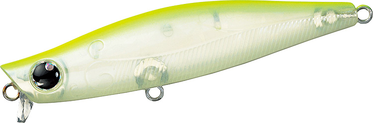
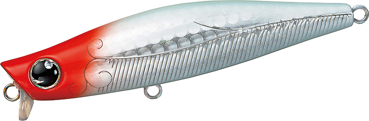

モアザン ガルバ87S
（MORETHAN GALVA 87S）
モアザン ガルバ87SはDAIWA（ダイワ）のリップ付きシンキングペンシルです。
“湾奥のプリンス”大野ゆうき監修のガルバシリーズで、64S・73Sより大きい87mmモデル。ショートリップとファットボディで、シンペンが苦手な水面直下〜20cmをスローに引けます。19.3gの重さで、シリーズの中で最も遠くまで届きます。

画像出典:DAIWA公式HP
スペック
- メーカー
- DAIWA（ダイワ）
- タイプ
- シンキングペンシル（リップ付き）
- 全長
- 87mm
- 自重
- 19.3g
- 有効レンジ
- 水面〜0.2m
- フック
- #3
- リング
- #3
- 飛距離
- Max69.5m／Ave66.8m
- アクション
- ワイドスイングアクション
- ターゲット
- シーバス
- 価格
- 2,000円（メーカー希望本体価格）
▼今すぐチェック

ガルバ87Sの特徴
ショートリップとファットボディで、水面直下をスローに引けるシンペン
-
ショートリップでレンジキープ
ショートリップで素早く浮き上がり、水面直下という難しいレンジを安定してキープ。横風を受ける状況でも、着水直後から水をつかんで泳ぎます。
-
ファットボディで揚力を得る
細身のシンペンと違い、太いボディで揚力を得られるので、ゆっくり巻いても沈みにくい設計。その分ウエイトを入れられるので、飛距離も出せます。
-
シリーズ最大の飛距離
87mm・19.3gで、テスト飛距離はMax69.5m。64S・73Sでは届かない沖のポイントまで、同じ水面直下の釣りを届けられます。
ガルバ87Sの使い方
基本はスローのただ巻き。ゆっくり巻くだけで、水面直下で弱りながら流されるベイトを演出できます。
反応がないときは、連続トゥイッチで水面直下をドッグウォークさせてみましょう。水面と水面直下を行き来させながら左右にダートさせると、トップでは見切られる状況でも口を使わせやすくなります。
ガルバ87Sの得意な状況
湾奥や河川で、ベイトが水面近くにいるとき。シーバスが表層を意識しているのに、トップには出きらない状況や、73Sでは届かない距離まで探りたいときに向いています。
ワンポイント
ベイトが小さいときや近距離戦では73S・64Sに持ち替えましょう。同じアクションのままサイズだけ落とせるので、ローテーションが組みやすくなります。
ガルバシリーズの使い分け
| モデル | 全長／自重 | 得意な場面 |
|---|---|---|
| 64S | 64mm／9.7g | マイクロベイトや近距離戦に |
| 73S | 73mm／12.8g | 湾奥・河川の基準サイズ |
| 87S | 87mm／19.3g | 飛距離が欲しいとき・やや大きいベイトに（本記事のモデル） |
ガルバはいずれも水面直下〜20cmを攻めるリップ付きシンペン。ベイトの大きさと、届かせたい距離でサイズを選びましょう。
人気カラー
公式ラインナップから4色を紹介します（カラー名は公式の表記のまま）。
イワシSゴールド
イワシを意識したナチュラルカラー。日中や澄み潮で自然に見せたいときに。
 ボラグロー
ボラグロー
ボラ系にグローをプラス。イナッコパターンのナイトゲームに。

ハッピーレモン大野ゆうき監修の定番カラー。濁りや夜でもしっかり見せたいときに。

ホロレッドヘッドホロのフラッシングとレッドヘッドの組み合わせ。濁りや常夜灯まわりに。
画像出典:DAIWA公式HP
ガルバ87Sに似ているルアー
-
 モアザン ガルバ73S
DAIWA
詳細はこちら＞
モアザン ガルバ73S
DAIWA
詳細はこちら＞
全長73mm・自重12.8gの同シリーズ。ベイトが小さいときや近距離戦に。
-
 マリブ78
マングローブスタジオ
詳細はこちら＞
マリブ78
マングローブスタジオ
詳細はこちら＞
全長78mm・自重11.8gのリップ付きシンペン。同じ大野ゆうきプロデュースで、少し深め（〜80cm）まで探りたいときに。
-
 バンク82S
ポップシークルー
詳細はこちら＞
バンク82S
ポップシークルー
詳細はこちら＞
全長82mm・自重14gのリップ付きシンペン。スラロームでゆっくり見せたいときに。